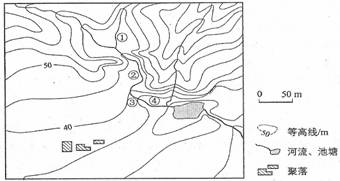
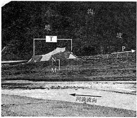
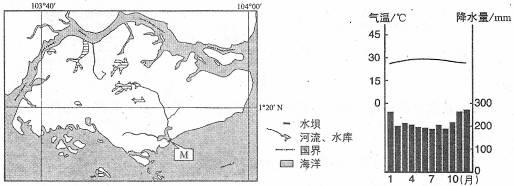
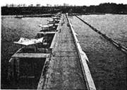
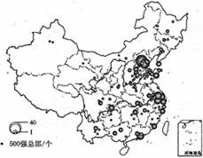
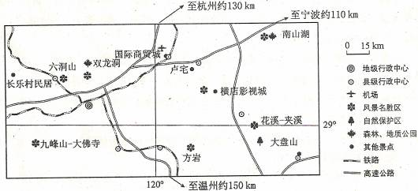
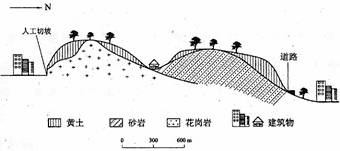

None - Fade - Slide - Convex - Concave - Zoom
选择班级
幻灯片样式
Black (default) -
White -
League -
Sky -
Beige -
Simple
Serif -
Blood -
Night -
Moon -
Solarized
日本某汽车公司在中国建有多个整车生产厂和零件生产厂。2011年3月11日东日本大地震及随后的海啸、核辐射灾难，使该公司在灾区的工厂停产。受其影响，该公司在中国的整车生产厂也被迫减产。据此完成1～2题。
1．该公司在中国建零部件生产厂，主要目的是
A．避免自然灾害对本土汽车生产的影响
B．为其中国整车厂配套，降低整车生产成本
C．利用中国廉价劳动力，为其日本整车厂服务
D．建立其全球整车生产的零部件工业基地
2．中国整车生产厂被迫减产是由于该公司在灾区有
A．研发中心
B．一般零部件厂
C．核心零部件厂
D．整车厂
第二次世界大战后，美国通过大量技术投入和大规模专业化生产，成为世界最大的大豆生产国和出口国。巴西自20世纪70年代开始种植大豆，在积极培育优良品种的同时，鼓励农民组建农场联合体，实现了大豆的规模化生产与经营。目前，巴西的大豆产量、出口量仅次于美国。中国曾是世界最大的大豆生产国和出口国，近些年大豆的质量下降（品种退化，出油率低），生产成本较高，成为世界最大的大豆进口国。据此完成3～5题。
3．巴西大豆总产量增加的潜力大于美国，主要是因为巴西
A．技术力量较雄厚
B．气候条件较优越
C．可开垦的土地资源较丰富
D．劳动力较充足
4．在国际市场上，巴西大豆价格低于美国的主要原因是巴西
A．专业化水平较高
B．科技投入较大
C．劳动生产率较高
D．劳动力价格较低
5．中国要提高大豆质量需
A．加大科技投入
B．扩大种植面积
C．增加劳动力投入
D．加大化肥使用量
6．图示区域内最大高差可能为
A．50m
B．55m
C．60m
D．65m
7．图中①②③④附近河水流速最快的是
A．①
B．②
C．③
D．④
8．在图示区域内拟建一座小型水库，设计坝高约13m。若仅考虑地形因素，最适宜建坝处的坝顶长度约
A．15m
B．40m
C．65m
D．90m
据此完成9～11题。
9．据图文信息可以推断
A．该段铁路沿等高线布线
B．该段河流冬季结冰
C．铁路沿P箭头指示向拉萨延伸
D．P箭头指示北方
10．M、N间的堆积物来源于
A．坡
B．河流
C．沟
D．原地
11．T设施的主要作用是
A．防御坡部位崩塌对铁路的危害
B．防御沟部位洪水及泥沙对铁路的危害
C．防御河流洪水对铁路的危害
D．方便野生动物穿越铁路线
36．（28分）依据图文资料及所学知识，完成下列各题。
某岛国人口约500万（2009年），经济发达，淡水资源严重不足。该国国土面积约640平方千米，其中主岛面积约540平方千米，地形单调，平均海拔不足15米，岛上河流最长不足16千米。图6示意该国主岛及位置，图7为对应的气候资料。
（1）简述该国气候特征，并分析该国淡水资源严重不足的主要原因。（10分）
气候特征：终年高温多雨。（2分） 主要原因：国土面积小， 地势低平， 四周环海， 陆地上储存淡水（地表水、地下水）的条件差（河流短小）；（4分） 人口密度大， 经济发达， 生活、生产对淡水需求量大。（4分）
（2）图8为图6中M水坝的景观。水坝阻挡海水涌入，并通过其闸门调控河流入海流量。说明建坝前后坝内水域水的咸淡变化及其原因。（12分）
水坝修建以前，水偏咸。（2分） 原因：河流水流平缓， 海潮（顶托作用）使河水和海水相混。（2分） 水坝修建后，水逐渐变淡（改善）。（2分） 原因：拦蓄淡水，阻止海水倒灌；（3 分） 通过闸门调控蓄水和排水，逐渐使偏咸的水换成淡水。（3分）
（3）除建水坝外，请你为该国再提出一种解决淡水资源短缺的办法，并说明理由。（6分）
①从邻国（马来西亚）购买淡水。 邻国（马来西亚）面积较大，高温多雨，有较多淡水。 两国之间的海峡狭窄，输送淡水成本低。 ②海水淡化。 该国经济比较发达，四周环海，可选适当地点，建海水淡化厂，生产淡水。 ③废水（污水）回收利用。 该国经济发达，人口密度大，生活、生产废水（污水）产生量大。 （提出以上三种办法之一或其它合理办法得2分，论述正确、完整得4分。）
37．（18分）图9示意2007年中国大陆制造业企业500强总部的空间分布，据图9，回答下列问题。
（1）简述中国大陆制造业企业500强总部空间分布的特点。（8分）
（1）（8分） 分布不均衡。（2分） 集中分布在东部沿海省市，（2分） 以环渤海地区（或京津冀地区）、长江三角洲地区最为集中。（2分） 西北部的省区总部数量较少。（2分） （其他合理答案可酌情给分，但本小题总分不超过8分。）
（2）分析图示资料，以某城市或某区域为例，说明其吸引制造业企业总部的优势条件。（10分）
举例。（2分） 优势条件。（8分） （说明：所述优势条件应与所举城市或区域相符，具体包括 地理位置特点、 经济水平、 工业基础、 基础设施、 信息交流、 科技水平、 交通运输等方面。 答出其中4个方面且论述正确即可得8分。）
42. (10分)旅游地理 阅读图文资料，完成下列要求。
读图10，分析图示地区发展自驾车旅游的优势条件
距主要客源地（杭州、宁波、温州等城市）路程适中，有高速公路连接；（3分） 客源地居民收入高，私家车拥有量多，出游率高；（3分） 旅游资源类型多样，地域组合好，分布集中。（4分）
43，（10分）自然灾害与防治
长江下游某城市边缘分布着丘陵，丘陵的基岩上有黄土覆盖（如图11所示）。近年来，由于城区扩展，大量开挖山坡，该地在夏季暴雨后曾发生多起黄土崩溃、滑坡灾害
阅读图文资料，简要分析该地黄土崩塌、滑坡多发的原因。
黄土垂直节理发育，孔隙度大； 人工开挖边坡，破坏了坡面地形的稳定性。（4分） 暴雨容易诱发坡地黄土崩塌；（3分） 雨水下渗，在基岩与黄土之间容易形成滑动面，造成黄土滑坡。（3分）
44、（10分）环境保护
阅读图文资料，完成下列要求。
某区域内湿地呈斑块状分布。，表1中的数据反映该区域湿地的变化。
阅读资料，分析该区域不同时段湿地变化的特点，说明湿地变化对环境的不利影响。
变化特点：1976～1986年，湿地斑块数量显著增加，湿地破碎，湿地面积大幅度减少。 （3分） 1986～2005年，湿地斑块数量和面积明显减少，湿地萎缩。（3分） 不利影响：涵养水源能力减弱； 小气候变差； 植被覆盖率下降； 土壤侵蚀加剧； 生态平衡破坏； 生物栖息地减少： 生物种类（数量）减少等。（4分） （每答1项得1分，答出4项或以上即可得4分）